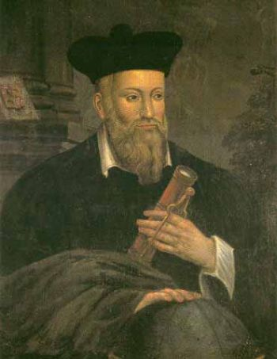

|

Мишель де Нострдам (фр. Michel de Nostredame), известный также как Нострадамус (14 декабря 1503 — 2 июля 1566) — французский астролог, врач, фармацевт и алхимик, знаменитый своими пророчествами.
Предсказания Мишеля Нострадамуса
Перу Нострадамуса принадлежат ежегодные альманахи, издававшиеся с 1550 года до самой смерти. Каждый из альманахов содержал один общий катрен на год, 12 катренов по месяцам года, и обширную прозаическую часть с предсказаниями. Именно альманахи принесли Нострадамусу славу при жизни. Однако не все их тексты дошли до наших дней; в настоящее время выборка 141 катрена из альманахов (1555—1567) часто публикуется в качестве самостоятельного произведения.
Первое издание «Пророчеств магистра Мишеля Нострадамуса», называемых ныне «Центуриями», вышло в Лионе в 1555 году. Оно содержало «Письмо к сыну Сезару» и 353 пророческих катрена. Письмо Сезару излагает оккультную философию пророчеств и даёт несколько предсказаний глобального характера (…мир приближается к анарагонической революции… к нам близится смертоносный меч мора и войны более ужасных, чем бывали на протяжении трёх человеческих жизней…). Второе издание (Лион, 1557) содержало, кроме того, 288 новых катренов и предостережение критикам (непронумерованный катрен). Самое раннее из сохранившихся полных изданий «Пророчеств» датировано 1568 г, то есть уже после смерти Нострадамуса. Оно содержит письмо Сезару, 942 катрена (7 центурия осталась незавершённой) и письмо королю Генриху, целиком пророческое по содержанию. ([Я] рассчитал почти столько же событий грядущего времени, сколько и прошедших лет… до самого [Второго] пришествия в начале седьмого тысячелетия). Неясно, видел ли это письмо номинальный адресат — король Генрих, погибший на турнире в 1559 году. Известно только, что катрены из последних центурий цитировались при жизни Нострадамуса; возможно, существовало неизвестное нам издание, предшествующее 1568 году. «Дополнительные катрены», приведённые Шавиньи в «Первом лике французского Януса» (Лион, 1594) под названием фрагментов 11 и 12 центурий, скорее всего относятся к одному из утерянных альманахов Нострадамуса. Происхождение шести новых катренов 8 центурии в издании Роффе (1588) сомнительно, а сиксены Винсента Сева (1606) считают фальсификацией.
Оценки пророчеств
На протяжении столетий толкователи видят в пророчествах Нострадамуса нечто весьма удивительное, выходящее за рамки простой случайности. Однако проходит время, и новые поколения обнаруживают новое понимание ранее разъяснённых фраз.
• Согласно Пензенскому, ценность пророческих текстов определяется в первую очередь тем, что они позволяют полнее исследовать смысловое пространство средневековой Франции. Впрочем, он отмечает также, что Нострадамус в своих пророчествах опирался на астрологические расчёты. Проблема астрологической повторяемости истории является темой отдельных исследований, выходящей за рамки собственно исторической науки.
• Ранее философ Л. П. Карсавин обсуждал пророчества Нострадамуса в контексте теории всеединства времени и души. По Карсавину, свобода воли человека реализуется в единстве будущего и прошлого, взаимосвязано с Богом и всем человечеством. Только лишь ограниченность восприятия замыкает наше сознание в узкие рамки времени и пространства. Феномен ясновидения, представленный пророчествами Нострадамуса, важен тем, что свидетельствует в пользу этих философских концепций.
• 14 дат в катренах путешественника во времени Мишеля Нострадамуса.
Отношение академической науки
• Концептуально и терминологически «Пророчества» Нострадамуса помещаются в общий контекст средневековой мистики и эсхатологии. Источником вдохновения предсказателя служит сборник Mirabilis Liber (1522), содержащий пророчества Псевдо-Мефодия, Иоахима Флорского, Савонаролы. Теория планетных эпох заимствуется почти дословно из трактата Ришара Русса. Не менее обильно цитируется Пётр Кринит. Нострадамус не проставлял ссылок на первоисточники, поэтому авторский текст трудно отличить от заимствований.
• Датой конца пророчеств является 2242 или 2243 год, который соответствует 6000 году от Сотворения Мира согласно I хронологии из Письма Генриху. Это согласуется с Ц.1.К.48 («Прошло 20 лет царствования Луны, в 6000 году будет править другой. Когда Солнце завершит свои усталые дни, тогда исполнится и закончится моё пророчество» ). Кстати, в 2240 году истекают 6000 лет от Сотворения Мира согласно еврейскому календарю. Кроме того, теория планетных эпох, изложенная в трудах ибн Эзра, Авраама (XII в.), Абу Машара (IX в.), и пересказанная Русса, утверждает, что эпоха Луны завершается в 1889 году, эпоха Солнца в 2242 году, и затем начинается век Сатурна, если только мир не прекратит своё существование в тот момент. В российской печати эти идеи зарубежных исследователей впервые озвучил А.Пензенский.
• Значительная часть катренов описывает события не будущего, но прошлого, по отношению к 1555 году. Разумеется, это утверждение не следует понимать превратно. Нострадамус верил, что события мировой истории циклически повторяются, потому что повторяются планетные конфигурации и происходят одинаковые знамения. И он описал события прошлого в надежде, что таковые снова произойдут в будущем.
|